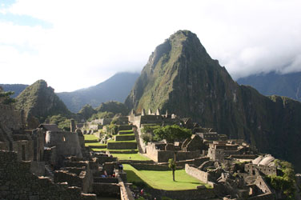
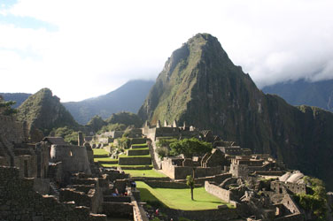
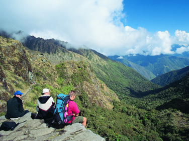
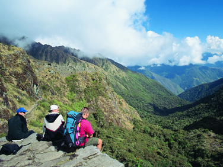

First-Class and Luxury AccomModations
TOUR Machu Picchu W/ Cuzco & SACRED VALLEY
Cuzco (sometimes spelled Cusco) is the entry point for passengers who want to take a tour to Machu Picchu. Daily flights connect Lima to Cusco and daily trains connect Cusco and the Sacred Valley to Machu Picchu. Our local English speaking guides meet you at the airports both in Lima and Cusco for transfers and hotel accommodations along the way. The colorful Incan town of Cusco, is one of the archaeological capitals of South America, with fine examples of Incan history and architecture. Cuzco is also rich in colonial heritage and remains much as it was during the colonial period when the Spanish entered Peru in the 16th century.
To the south of Cuzco, your tour leads you to the ruins of Piquillacta, and the beautiful colonial Andahuay lillas Church (named the Peruvian Sistine Chapel). About an hour and one half drive to the south is the "Sacred Valley of the Incas" which is filled with colorful Andean villages and several first-class and luxury hotels. The market town of Pisac, with its stately ruins and colorful Indian Market Fair is nestled in the valley, surrounded by Andean mountain peaks and further north is the famous Ollantaytambo Inca Fortress. Machu Picchu, called the "Lost City of the Incas", was one of the great archaelogical discoveries of the 20th century - discovered in 1911 by Hiram Bingham of Yale University. The beautifully preserved ruins consist of an enormous stone city, hidden by a spectacular terraced green mountain plateau, and surrounded by three towering peaks. In terms of altitude, Cusco is over 11,000 feet above sea level, while the Sacred Valley is about 9,000 feet above sea level and Machu Picchu itself drops to approximately 8,000 feet above sea level.


 

 



{kind=link}